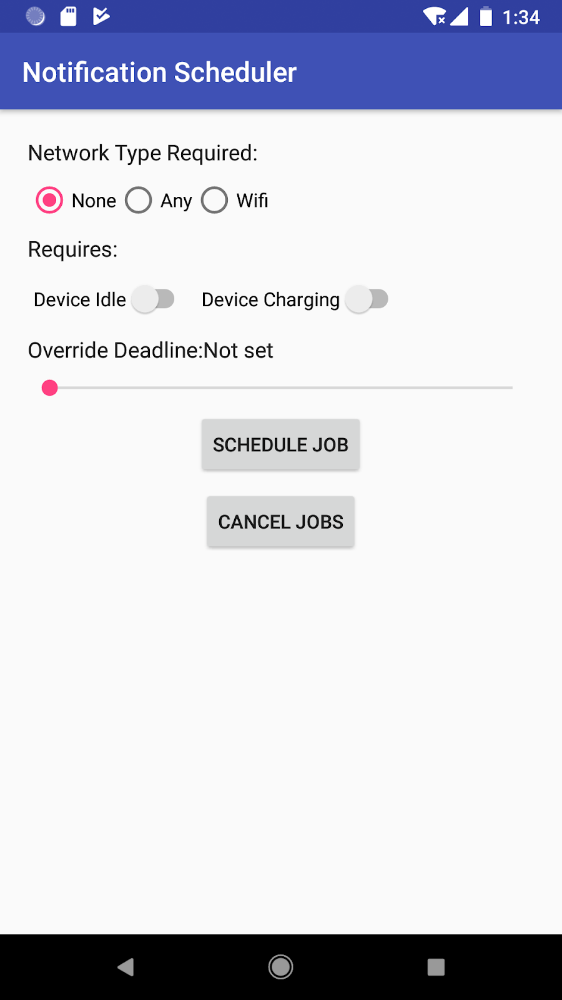
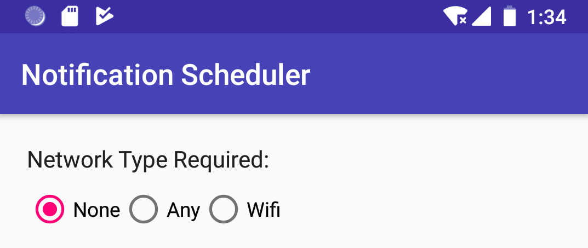
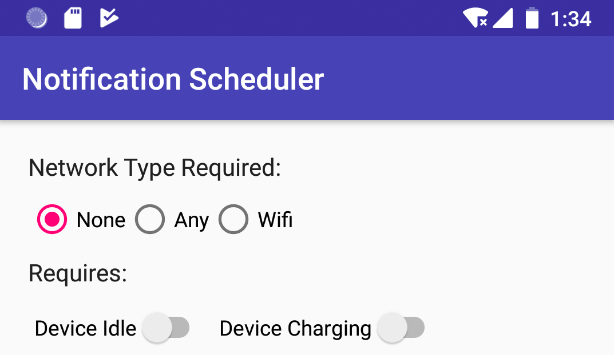
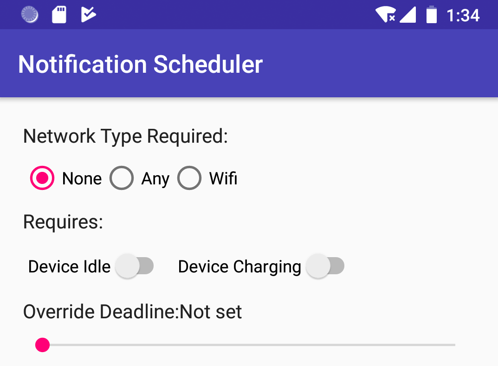
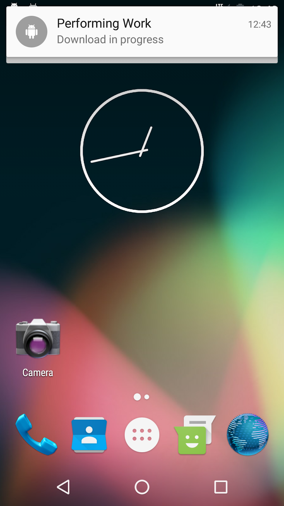

この実践的なコードラボはユニット 3: Android Developer Fundamentals (Version 2) コースのバックグラウンドでの作業の一部です。コードラボを順番に進めていくことで、このコースを最大限に活用することができます。
注：このコースでは、「codelab」と「practical」という用語を使い分けています。
序章
AlarmManager クラスを使用して、リアルタイムクロックや起動からの経過時間に基づいてイベントをトリガーすることができることを見てきました。しかし、ほとんどのタスクは正確な時間を必要とせず、システムとユーザーの要件の組み合わせに基づいてスケジュールする必要があります。例えば、ユーザーのデータとシステムリソースを保存するために、ニュースアプリは、デバイスが充電されてWi-Fiに接続されるまでニュースを更新するのを待つことができます。
JobScheduler クラスでは、タスクをいつ実行するかの条件やパラメータを設定することができます。これらの条件が与えられると、JobScheduler はジョブの実行をスケジュールするための最適な時間を計算します。例えば、ジョブのパラメータには、再起動時のジョブの持続性、デバイスが接続されているかどうか、デバイスがアイドル状態であるかどうかなどを設定することができます。
実行されるタスクは、JobServiceのサブクラスとして実装され、指定されたパラメータに従って実行されます。
JobSchedulerはAPI 21以上を実行しているデバイスでのみ利用可能で、現在サポートライブラリでは利用できません。下位互換性がある場合は、WorkManager を使用してください。WorkManager API を使用すると、アプリプロセスの有無に関わらず、完了を保証する必要のあるバックグラウンドタスクをスケジュールすることができます。Google Play サービスを使用していないデバイスを含む、API 14 以上を実行しているデバイスでは、WorkManager は JobScheduler と同様の機能を提供します。
この実習では、通知をスケジュールするアプリを作成します。ユーザーが設定したパラメータが満たされ、システム要件を満たすと通知が投稿されます。
すでに知っておくべきこと
できるようになるはずです。
Switchビューを使用します。PendingIntentsを作成します。あなたが学ぶこと
JobServiceの実装方法。JobInfoオブジェクトを構築する方法。JobInfoオブジェクトに基づいてJobServiceをスケジュールする方法。あなたがすること
JobService を実装します。JobService上の制約(デバイスが充電されるまで待機するなど)を設定するためのユーザ入力を取得します。JobSchedulerを使用してジョブをスケジュールします。この実習では、Notification Schedulerというアプリを作成します。このアプリでは、ユーザが制約を選択してジョブをスケジュールすることで、JobSchedulerフレームワークをデモします。そのジョブが実行されると、アプリは通知を投稿します。(このアプリでは、通知は実質的に「ジョブ」です。)

JobSchedulerを使用するには、JobServiceとJobInfoを使用する必要があります。
JobInfo オブジェクトには、ジョブを実行するトリガーとなる条件のセットが含まれています。JobInfoオブジェクトに設定された条件で実行されるジョブの実装です。まずは、条件で決められた時間に実行するサービスを作成します。システムが自動的にJobServiceを実行してくれます。実装する必要があるのは、onStartJob()コールバックとonStopJob()コールバックのみです。
onStartJob()コールバックについて。
trueの場合、作業は別のスレッドにオフロードされ、アプリはジョブが完了したことを示すために、そのスレッドで明示的にjobFinished()を呼び出す必要があります。false の場合、システムは onStartJob() の終了時までにジョブが完了したことを知っており、システムはあなたに代わって jobFinished() を呼び出します。注意:onStartJob()メソッドはメインスレッド上で実行されるため、長時間実行されるタスクは別のスレッドにオフロードされなければなりません。このアプリでは、単に通知を投稿しているだけなので、メインスレッド上で安全に行うことができます。
onStopJob()コールバックについて。
JobInfo に記述されている条件が満たされなくなった場合は、ジョブを停止しなければならず、システムは onStopJob() を呼び出します。onStopJob() コールバックは、ジョブが終了しなかった場合に何をするかを決定するブール値を返します。戻り値が真の場合、ジョブは再スケジュールされ、そうでない場合、ジョブは中止されます。1.1 プロジェクトと NotificationJobService クラスの作成
使用している最小SDKがAPI 21であることを確認してください。API 21以前では、必要なAPIの一部が不足しているため、JobSchedulerは動作しません。
com.android.example.notificationschedulerパッケージの中に、JobServiceを継承する新しいJavaクラスを作成します。新しいクラス NotificationJobService を呼び出します。onStartJob()とonStopJob()を追加します。クラス宣言の横にある赤い電球をクリックして、「メソッドを実装」を選択し、「OK」を選択します。AndroidManfest.xmlファイルのタグ内で、以下の権限でJobServiceを登録してください。 <service
android:name=".NotificationJobService"
android:permission="android.permission.BIND_JOB_SERVICE"/>1.2 onStartJob()の実装
NotificationJobService.javaで以下の手順を実装します。
ic_job_running という名前を付けます。NotificationManager mNotifyManager;
// Notification channel ID.
private static final String PRIMARY_CHANNEL_ID =
"primary_notification_channel";
onStartJob()メソッドの中で、通知チャネルを作成するメソッドを定義します。/**
* Creates a Notification channel, for OREO and higher.
*/
public void createNotificationChannel() {
// Define notification manager object.
mNotifyManager =
(NotificationManager) getSystemService(NOTIFICATION_SERVICE);
// Notification channels are only available in OREO and higher.
// So, add a check on SDK version.
if (android.os.Build.VERSION.SDK_INT >=
android.os.Build.VERSION_CODES.O) {
// Create the NotificationChannel with all the parameters.
NotificationChannel notificationChannel = new NotificationChannel
(PRIMARY_CHANNEL_ID,
"Job Service notification",
NotificationManager.IMPORTANCE_HIGH);
notificationChannel.enableLights(true);
notificationChannel.setLightColor(Color.RED);
notificationChannel.enableVibration(true);
notificationChannel.setDescription
("Notifications from Job Service");
mNotifyManager.createNotificationChannel(notificationChannel);
}
} onStartJob()内で、通知チャネルを作成するメソッドを呼び出します。アプリのMainActivityを起動するPendingIntentを作成します。このインテントは、通知のコンテンツ インテントです。//Create the notification channel
createNotificationChannel();
//Set up the notification content intent to launch the app when clicked
PendingIntent contentPendingIntent = PendingIntent.getActivity
(this, 0, new Intent(this, MainActivity.class), PendingIntent.FLAG_UPDATE_CURRENT);onStartJob()では、以下の属性を持つ通知を構築して配信します。属性 | タイトル |
コンテンツタイトル |
|
コンテンツテキスト |
|
コンテンツインテント | コンテンツペンディングインテント |
スモールアイコン |
|
優先順位 |
|
デフォルト |
|
オートキャンセル | 真 |
onStartJob()コールバックで完了するため、onStartJob()がfalseを返すことを確認してください。ここに onStartJob() メソッドの完全なコードがあります。
@Override
public boolean onStartJob(JobParameters jobParameters) {
//Create the notification channel
createNotificationChannel();
//Set up the notification content intent to launch the app when clicked
PendingIntent contentPendingIntent = PendingIntent.getActivity
(this, 0, new Intent(this, MainActivity.class),
PendingIntent.FLAG_UPDATE_CURRENT);
NotificationCompat.Builder builder = new NotificationCompat.Builder
(this, PRIMARY_CHANNEL_ID)
.setContentTitle("Job Service")
.setContentText("Your Job ran to completion!")
.setContentIntent(contentPendingIntent)
.setSmallIcon(R.drawable.ic_job_running)
.setPriority(NotificationCompat.PRIORITY_HIGH)
.setDefaults(NotificationCompat.DEFAULT_ALL)
.setAutoCancel(true);
mNotifyManager.notify(0, builder.build());
return false;
}onStopJob()がtrueを返すことを確認してください。ジョブが失敗した場合、ジョブを削除するのではなく、再スケジューリングしたいからです。JobService ができたので、ジョブを実行するための基準を確認しましょう。これには、JobInfo コンポーネントを使用します。様々なネットワーク接続タイプとデバイスステータスを使用して、ジョブを実行するための一連のパラメータ化された条件を作成します。
開始するには、このジョブが必要とするネットワークタイプを決定するために、ラジオボタンのグループを作成します。
2.1 ネットワーク制約の実装
ジョブを実行するための条件として考えられるのは、デバイスのネットワーク接続の状態です。特定のネットワーク条件が満たされた場合にのみ実行されるようにJobServiceを制限することができます。オプションは3つあります。
NETWORK_TYPE_NONEは、ネットワーク接続の有無に関わらずジョブを実行することを意味します。これがデフォルト値です。NETWORK_TYPE_ANYは、ネットワーク（携帯電話、Wi-Fi）が利用可能な限り、ジョブが実行されることを意味します。NETWORK_TYPE_UNMETEREDは、HotSpotを使用しないWi-Fiにデバイスが接続されている限り、ジョブが実行されることを意味します。アプリのレイアウトを作成する
アプリのレイアウトには、ユーザーがネットワークの基準を選択するラジオボタンが含まれています。

activity_main.xmlファイルに以下の手順を実装します。必ずすべてのディメンションと文字列リソースを抽出してください。
LinearLayoutに変更し、レイアウトのパディングを16dpにします。いくつかのエラーが出るかもしれませんが、これは後で修正します。<LinearLayout
xmlns:android="http://schemas.android.com/apk/res/android"
android:layout_width="match_parent"
android:layout_height="match_parent"
android:orientation="vertical"
android:padding="16dp">
....
</LinearLayout>属性 | 値 |
アンドロイド |
|
アンドロイド |
|
アンドロイド |
|
|
|
アンドロイド |
|
TextViewの下に、以下の属性を持つRadioGroupコンテナ要素を追加します。属性 | 値 |
アンドロイド |
|
アンドロイド |
|
アンドロイド |
|
アンドロイド |
|
アンドロイド |
|
注: RadioGroup 要素を使用すると、次のステップで定義する要素の子要素のうち 1 つだけをユーザーが選択できるようになります。詳細については、「ラジオボタン」を参照してください。
RadioButtonビューをRadioGroup内の子要素として追加します。それぞれのラジオボタンについて、レイアウトの高さと幅を「wrap_content」に設定し、以下の属性を設定します。ラジオボタン1 | |
アンドロイド |
|
アンドロイド |
|
アンドロイド |
|
ラジオボタン 2 | |
アンドロイド |
|
アンドロイド |
|
ラジオボタン 3 | |
アンドロイド |
|
アンドロイド |
|
RadioGroupの下に2つのButtonビューを追加します。それぞれのボタンについて、高さと幅を「コンテンツをラップ」に設定し、以下の属性を設定します。ボタン1 | |
アンドロイド |
|
アンドロイド |
|
|
|
アンドロイド |
|
ボタン2 | |
アンドロイド |
|
アンドロイド |
|
|
|
アンドロイド |
|
MainActivity で、2 つのボタンのそれぞれに onClick() メソッドのスタブを追加します。選択したネットワークオプションを取得する
MainActivity.javaに以下の手順を実装します。必要に応じて文字列リソースを抽出します。
scheduleJob() メソッドで、ID で RadioGroup を見つけて、それを networkOptions という名前のインスタンス変数に保存します。RadioGroup networkOptions = findViewById(R.id.networkOptions);
scheduleJob() メソッドで、選択されたネットワーク ID を取得し、整数変数に保存します。int selectedNetworkID = networkOptions.getCheckedRadioButtonId();
scheduleJob()メソッドで、選択されたネットワーク・オプションのための整数変数を作成します。この変数をデフォルトのネットワーク・オプション（NETWORK_TYPE_NONE）に設定します。int selectedNetworkOption = JobInfo.NETWORK_TYPE_NONE;int selectedNetworkOption = JobInfo.NETWORK_TYPE_NONE.
scheduleJob() メソッドで、選択されたネットワーク ID を持つ switch 文を作成します。可能な ID のそれぞれにケースを追加します。scheduleJob() メソッドでは、ケースに応じて、選択したネットワーク・オプションに適切な JobInfo ネットワーク定数を割り当てます。switch(selectedNetworkID){
case R.id.noNetwork:
selectedNetworkOption = JobInfo.NETWORK_TYPE_NONE;
break;
case R.id.anyNetwork:
selectedNetworkOption = JobInfo.NETWORK_TYPE_ANY;
break;
case R.id.wifiNetwork:
selectedNetworkOption = JobInfo.NETWORK_TYPE_UNMETERED;
break;
}JobSchedulerとJobInfoオブジェクトの作成
JobSchedulerのメンバ変数を作成します。private JobScheduler mScheduler;scheduleJob()メソッド内では、getSystemService()を使用してmSchedulerを初期化します。mScheduler = (JobScheduler) getSystemService(JOB_SCHEDULER_SERVICE);JOB_IDのメンバ定数を作成し、0に設定します。private static final int JOB_ID = 0;scheduleJob()メソッドの中で、Switchブロックの後に、JobInfo.Builderオブジェクトを作成します。最初のパラメータはJOB_IDです。2 番目のパラメータは、作成した JobService の ComponentName です。ComponentName は、JobInfo オブジェクトと JobService を関連付けるために使用されます。ComponentName serviceName = new ComponentName(getPackageName(),
NotificationJobService.class.getName());
JobInfo.Builder builder = new JobInfo.Builder(JOB_ID, serviceName);JobInfo.Builder オブジェクトで setRequiredNetworkType() を呼び出します。選択したネットワークオプションを渡します。.setRequiredNetworkType(selectedNetworkOption);JobScheduler オブジェクトで schedule() を呼び出します。build() メソッドを使用して、JobInfo オブジェクトを渡します。JobInfo myJobInfo = builder.build();
mScheduler.schedule(myJobInfo);Toastメッセージを表示し、ジョブがスケジュールされていることをユーザーに知らせます。Toast.makeText(this, "Job Scheduled, job will run when " +
"the constraints are met.", Toast.LENGTH_SHORT).show();cancelJobs() メソッドで、JobScheduler オブジェクトが null であるかどうかをチェックします。そうでない場合は、そのオブジェクトの cancelAll() を呼び出して、保留中のジョブをすべて削除します。また、JobScheduler を NULL にリセットし、ジョブがキャンセルされたことをユーザに伝えるためのトーストメッセージを表示します。if (mScheduler!=null){
mScheduler.cancelAll();
mScheduler = null;
Toast.makeText(this, "Jobs cancelled", Toast.LENGTH_SHORT).show();
}ネットワークの制約を「Any」や「Wifi」に変更しないと、以下の例外でアプリがクラッシュすることに気づくかもしれません。
java.lang.IllegalArgumentException:
You're trying to build a job with no constraints, this is not allowed.制約のないジョブを構築しようとすると、これは許されません。
クラッシュが発生するのは、"No Network Required"条件がデフォルトであり、この条件は制約としてカウントされないためです。ジョブサービスを適切にスケジューリングするために、ジョブスケジューラは少なくとも1つの制約を必要とします。
次のセクションでは、少なくとも1つの制約が設定されている場合は真、そうでない場合は偽の条件変数を作成します。条件が真の場合、アプリはタスクをスケジュールします。条件がFalseの場合、アプリは、ユーザーに制約を設定するように指示するトースト メッセージを表示します。
2.2 制約条件のチェック
JobSchedulerは少なくとも一つの制約を設定する必要があります。このタスクでは、この要件が満たされているかどうかを追跡するブーリアンを作成します。次のステップで追加のオプションを作成する際には、少なくとも1つの制約が設定されている場合は常にtrueで、そうでない場合はfalseになるように、このブール値を修正する必要があります。
scheduleJob()内のMainActivity.javaに以下の手順を実装します。
JobInfo.Builder定義の後、myJobInfo定義の上に、constraintSetという名前のブール変数を作成します。この変数は、選択されたネットワークオプションがデフォルトではない場合に真となります。(デフォルトは JobInfo.NETWORK_TYPE_NONE です。)boolean constraintSet = selectedNetworkOption != JobInfo.NETWORK_TYPE_NONE;boolean constraintSet = selectedNetworkOption != JobInfo.NETWORK_TYPE_NONE.
constraintSet定義後、constraintSet変数を使用してif/elseブロックを作成します。ifブロックに移動します。constraintSetがfalseの場合は、少なくとも1つの制約を設定するようにユーザーに伝えるトーストメッセージを表示します。文字列リソースの抽出を忘れないでください。if(constraintSet) {
//Schedule the job and notify the user
JobInfo myJobInfo = builder.build();
mScheduler.schedule(myJobInfo);
Toast.makeText(this, "Job Scheduled, job will run when " +
"the constraints are met.", Toast.LENGTH_SHORT).show();
}else {
Toast.makeText(this, "Please set at least one constraint",
Toast.LENGTH_SHORT).show();
}2.3 デバイスアイドルおよびデバイス充電制約の実装
JobSchedulerを使用すると、デバイスが充電中になるまで、またはデバイスがアイドル状態（スクリーンオフやCPUがスリープ状態）になるまで、アプリにJobServiceの実行を待機させることができます。
このセクションでは、アプリにスイッチを追加して、ジョブサービスの制約を切り替えます。
新しい制約のUI要素を追加します。

activity_main.xmlファイルに以下の手順を実装します。
TextViewをコピーして、RadioGroupの下に貼り付けます。android:text属性を"Required:"に変更します。4dpのマージンで水平のLinearLayoutを追加します。属性 | 値 |
アンドロイド |
|
アンドロイド |
|
アンドロイド |
|
アンドロイド |
|
LinearLayoutの子として2つのSwitchビューを作成します。高さと幅を"wrap_content"に設定し、以下の属性を使用します。スイッチ1 | ||
アンドロイド |
| |
アンドロイド |
| |
スイッチ2 | ||
アンドロイド |
| |
アンドロイド |
| |
新しい制約のコードを追加します。
MainActivity.javaに以下の手順を実装します。
スイッチ用の mDeviceIdle と mDeviceCharging というメンバ変数を作成します。onCreate()で変数を初期化します。//Switches for setting job options
private Switch mDeviceIdleSwitch;
private Switch mDeviceChargingSwitch;onCreate()を使用しています。
mDeviceIdleSwitch = findViewById(R.id.idleSwitch);
mDeviceChargingSwitch = findViewById(R.id.chargingSwitch);scheduleJob() メソッドで、以下の呼び出しを追加します。これらの呼び出しは、ビルダーオブジェクトの作成中に、Switchビューでのユーザの選択に基づいて、JobInfo.Builderに制約を設定します。.setRequiresDeviceIdle(mDeviceIdleSwitch.isChecked())
.setRequiresCharging(mDeviceChargingSwitch.isChecked());constraintSet を設定するコードを更新します。boolean constraintSet = (selectedNetworkOption != JobInfo.NETWORK_TYPE_NONE)
|| mDeviceChargingSwitch.isChecked() || mDeviceIdleSwitch.isChecked();
エミュレータで充電状態の制約をテストするには
大容量ファイルのダウンロードやアップロードなど、バッテリーを必要とする作業の場合、デバイスがアイドル状態になって電源に接続されるまで待つのが一般的なパターンです。
2.4 オーバーライド期限制約の実装
ここまでは、フレームワークがいつタスクを実行するかを正確に知る方法はありません。システムは効率的なリソース管理を考慮しているため、デバイスの状態によってはタスクが遅れる可能性があり、タスクが時間通りに実行されることを保証するものではありません。
JobScheduler APIには、以前のすべての制約を上書きするハードデッドラインを設定する機能が含まれています。
タスクの実行期限を設定するための新しいUIを追加する

このステップでは、シークバーを使用して、ユーザーがタスクの実行期限を0～100秒の間で設定できるようにします。ユーザーはシークバーを左右にドラッグして値を設定します。
activity_main.xmlファイルに以下の手順を実装します。
スイッチ・ビューのあるLinearLayoutの下に、水平のLinearLayoutを作成します。新しいLinearLayoutはSeekBarラベル用です。属性 | 値 |
アンドロイド |
|
アンドロイド |
|
アンドロイド |
|
アンドロイド |
|
TextView ビューを LinearLayout に追加します。テキストビュー 1 | |
アンドロイド |
|
アンドロイド |
|
アンドロイド |
|
アンドロイド |
|
|
|
テキストビュー 2 | |
アンドロイド |
|
アンドロイド |
|
アンドロイド |
|
アンドロイド |
|
|
|
LinearLayout の下に SeekBar ビューを追加します。次の属性を使用します。属性 | 値 |
アンドロイド |
|
アンドロイド |
|
アンドロイド |
|
アンドロイド |
|
締め切りを追加するコードを書く
以下の手順をMainActivity.javaに実装します。文字列リソースを抽出することを忘れないでください。
SeekBarのメンバ変数を作成し、onCreate()で初期化します。//Override deadline seekbar
private SeekBar mSeekBar;//シークバーの期限をオーバーライド
private SeekBar mSeekBar.
onCreate()を使用しています。
mSeekBar = findViewById(R.id.seekBar);onCreate()で、シーク・バーのプログレス・テキストビュー用の最終変数を作成して初期化します。(この変数は内部クラスからアクセスされます)。final TextView seekBarProgress = findViewById(R.id.seekBarProgress);onCreate()で、新しいOnSeekBarChangeListenerを渡してシークバー上でsetOnSeekBarChangeListener()を呼び出します。(Android Studioが必要なメソッドを生成してくれるはずです)。mSeekBar.setOnSeekBarChangeListener(new SeekBar.OnSeekBarChangeListener() {
@Override
public void onProgressChanged(SeekBar seekBar, int i, boolean b) {}
@Override
public void onStartTrackingTouch(SeekBar seekBar) {}
@Override
public void onStopTrackingTouch(SeekBar seekBar) {}
});onProgressChanged()の第2引数は、シークバーの現在の値です。onProgressChanged() コールバックでは、整数値が 0 より大きいかどうかをチェックします（ユーザーが値を設定したことを意味します）。値が0より大きい場合は、シークバーの進捗ラベルを整数値に設定し、秒を示す秒の後にsを付けます。そうでなければ、テキストビューを"Not Set"と読むように設定します。if (i > 0){
seekBarProgress.setText(i + " s");
}else {
seekBarProgress.setText("Not Set");
}0 より大きい場合にのみ設定する必要があります。 scheduleJob() メソッドで、シークバーの進行状況を格納するための int を作成します。また、シークバーの整数値が 0 より大きい場合に真となるブール変数も作成します。int seekBarInteger = mSeekBar.getProgress();
boolean seekBarSet = seekBarInteger > 0;scheduleJob() メソッドで、seekBarSet が true の場合、JobInfo.Builder で setOverrideDeadline() を呼び出します。シークバーの整数値に1000を掛けた値を渡します。(パラメータはミリ秒単位で、ユーザーが秒単位で期限を設定したい場合)。if (seekBarSet) {
builder.setOverrideDeadline(seekBarInteger * 1000);
}可能な制約として seekBarSet の値を含めるように constraintSet を変更します。boolean constraintSet = selectedNetworkOption != JobInfo.NETWORK_TYPE_NONE
|| mDeviceChargingSwitch.isChecked() || mDeviceIdleSwitch.isChecked()
|| seekBarSet;Android Studioプロジェクト。NotificationScheduler
注: コーディングの課題はすべて任意であり、後のレッスンの前提条件ではありません。
課題: これまで、ジョブサービスのタスクは単に通知を配信していましたが、ジョブスケジューラは通常、天気の更新やデータベースとの同期など、より堅牢なバックグラウンドタスクに使用されていました。バックグラウンドタスクは、プログラム的にも機能的にもより複雑になる可能性があるため、タスクが完了したときにフレームワークに通知する仕事は開発者に任されています。幸いなことに、開発者は jobFinished() を呼び出すことでこれを行うことができます。
この課題では、タスクが完了した後に jobFinished() を呼び出す必要があります。
AsyncTaskを起動するJobServiceを実装します。AsyncTask は 5 秒間スリープする必要があります。Toastメッセージを表示します。JobSchedulerは、バックグラウンドサービスをインテリジェントに実行するための柔軟なフレームワークを提供します。JobSchedulerはAPI 21以上のデバイスでのみ利用可能です。JobSchedulerを使用するには、2つのパーツが必要です。JobService と JobInfo です。JobInfoは、ジョブを実行するトリガーとなる条件のセットです。JobServiceは、JobInfoで指定された条件で実行するジョブを実装します。onStartJob() と onStopJob() コールバックメソッドを実装する必要があります。onStartJob()で発生するか、開始されます。onStartJob()メソッドは、サービスが別のスレッドで作業を処理する必要があるかどうかを示すブール値を返します。trueを返す場合、明示的にjobFinished()を呼び出す必要があります。onStartJob() が false を返す場合、ランタイムはあなたに代わって jobFinished() を呼び出します。JobServiceはメインスレッドで処理されるので、長時間の計算やI/Oは避けるべきです。JobScheduler は、タスクのスケジューリングを担当するマネージャクラスです。JobScheduler は、システムリソースの効率を最大化するためにタスクをバッチ処理しますが、これはタスクがいつ実行されるかを正確に制御できないことを意味します。関連する概念のドキュメントは「8.3: 効率的なデータ転送」にあります。
Androidの開発者向けドキュメント。
このセクションでは、インストラクターが主導するコースの一部として、このコードラボを通して作業する学生のための可能な宿題をリストアップします。以下のことをするかどうかはインストラクター次第です。
講師は、彼らが望むように少しまたは多くのようにこれらの提案を使用することができますし、彼らが適切であると感じる他の宿題を割り当てるために自由に感じるはずです。
もしあなた自身でこのコードラボに取り組んでいるのであれば、これらの宿題を使ってあなたの知識をテストしてみてはいかがでしょうか。
アプリを構築して実行する
バッテリーとデータの消費を考慮してスケジュールされた大規模なダウンロードをシミュレートするアプリを作成します。アプリには「Download Now」ボタンが含まれており、以下のような機能があります。
ヒント :JobService クラスを内部クラスとして定義します。そうすることで、Download NowボタンとJobServiceが同じメソッドを呼び出して通知を配信することができます。

注意：デバイスのAPIレベルによっては、通知が少し違って見える場合があります。
以下の質問に答えてください。
質問1
JobSchedulerで提供されているような機能が欲しいが、APIレベル20以下のデバイスでも動作するようにしたい場合は、どのクラスを使用しますか？
アプリを提出して採点を受ける
学年別ガイダンス
アプリが以下の機能を持っているかどうかを確認しましょう。
JobInfoオブジェクトには、setRequiresCharging()、setPeriodic()、setRequiresDeviceIdle()、setRequiredNetworkType()の4つの基準が設定されています。Android Developer Fundamentals (V2)コースの次の実践的なコードラボを見つけるには、Codelabs for Android Developer Fundamentals (V2)を参照してください。
概念章、アプリ、スライドへのリンクを含むコースの概要については、Android Developer Fundamentals (Version 2)を参照してください。